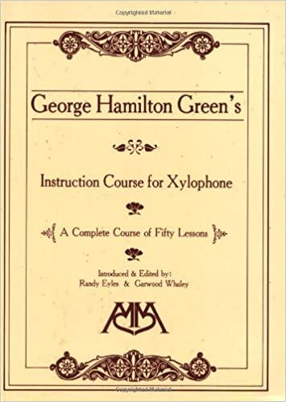

Key Ideas:
- Applying method of movement to scales and arpeggios
- Learning ragtime styles
The Green Survey
Left hand
-
Pages 30, 31: Learning to play with relaxed, continuous motion.
-
Page 42 ex. 6: Developing left hand speed and smooth voice leading.
-
Page 55: Creating resonant arpeggios through the second note of the double.
-
Page 57 ex. 5: Developing left hand speed and smooth voice leading.
-
Page 61 ex. 5: Gaining control over left hand weight.
-
Page 99: Exploring left hand touch while reading.
-
Page 130: Building shuffle feels in the left hand.
Right hand
- Page 32: Learning to create the rebound through ragtime patterns.
- Page 42 ex. 5: Developing right hand speed and smooth voice leading.
- Page 55: Creating resonant arpeggios through the second note of the double.
- Page 57 ex. 4: Developing left hand speed and smooth voice leading.
- Page 83 1R, 2R: controlling multiple rebounds at once within ragtime patterns.
- Page 84: Creating the second note of the double while reading.
- Page 104: Learning to shift during rebound strokes.
- Page 129: Learning to shape melodies in continuous streams of notes.
- Page 135, 136: Creating dance feels through arm weight accents.
Double Stops
- Pages 36-39: Learning to create legato double stops with smooth voice leading.
- Page 44 3R: Applying melodic lines to create the ragtime dance feel.
- Page 65: Learning to switch between rolls and double stops without losing the feel.
- Page 66, 67: Developing fluid motions to create long, sustained phrases.
- Page 68: Applying double stops to ragtime harmony.
- Page 71: Combining shifting and arm weight accents in wide-set ragtime patterns.
- Page 81: Developing fluid motions to create long, sustained phrases.
- Page 111: Developing fluid motions to create long, sustained phrases.
- Page 120 ex3: Applying double stroke rebound to long melodic lines.
- Page 140 ex7: Applying double stop shifting to blues figures.
- Page 147: Shifting between alternating bursts and double stops.
- Page 149: Reading ragtime patterns.
Patterns and Scales
- Page 39 ex5, ex6: Creating long lines.
- Page 42 ex4: Creating long lines.
- Page 43 ex8: Creating long lines.
- Page 81 ex3: Creating long lines.
- Page 81 ex6: Creating long lines.
- Page 82: Reading a long stream of notes.
- Page 120 ex2: Creating long lines.
Arpeggios
- Page 60 ex1, ex2: Creating seperate, controlled voices.
- Page 69: Connecting long, sweeping arpeggio patterns.
- Page 70 ex7: Throwing the notes out with relaxed motions.
- Page 81 ex5: Relaxing through wide patterns.
- Page 88: Creating clean double stops through relaxed rebound control.
- Page 96, 97: Maintaining comfort and relaxation while switching manuals.
- Page 117-119: Connecting long, sweeping arpeggio patterns.
- Page 123: Applying light touch to long lines.
Grace Notes
- Pages 48-50: Learning to "keep the main note the main note" through rebound control and solid internal time.
- Pages 95: Applying grace notes in ragtime patterns.
- Pages 126-128: Exploring extended grade note techniques.
Style!
Explore techniques through musical etudes across multiple styles.
- Page 56
- Page 73
- Page 74
- Page 79
- Page 106
- Page 121
- Page 122 <-- The famous Green March
- Page 125
- Page 131-134
- Page 137
- Page 150-160
 evel I 101: The Green Book
evel I 101: The Green Book